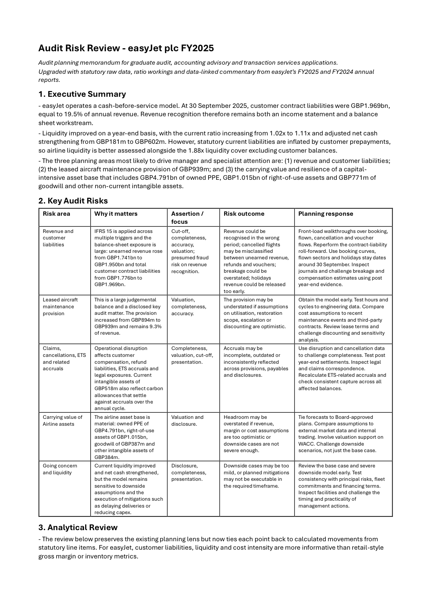
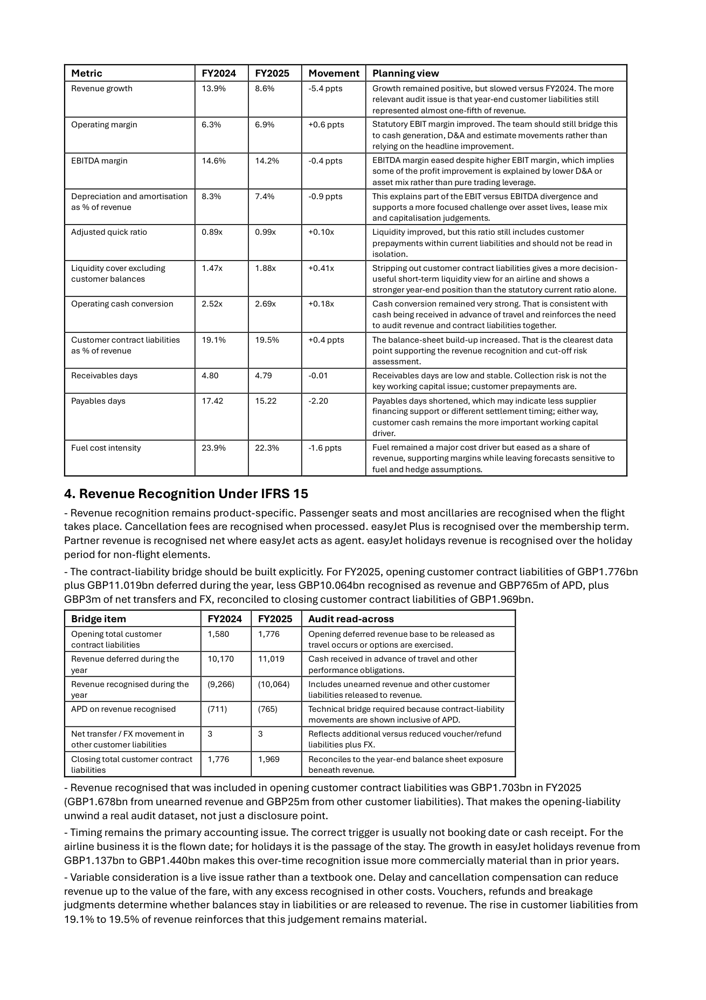

Overview
easyJet runs a cash-before-service model: customers pay well before they fly, so at 30 September 2025 customer contract liabilities stood at £1.969bn, about 19.5% of annual revenue. That makes revenue recognition both an income statement and a balance sheet question, which is where an audit would start. I pulled the figures straight from the FY2025 and FY2024 annual reports, calculated the year-on-year movements in Excel, and tied every planning point back to a specific number and assertion.


The key audit risks
Revenue and customer liabilities. Unearned revenue rose from £1.741bn to £1.950bn and total customer contract liabilities from £1.776bn to £1.969bn. IFRS 15 is applied across several triggers, so the risk sits in cut-off, breakage, and refunds and vouchers around the year-end. The planning response front-loads walkthroughs over booking, flown and cancellation flows and rolls the contract liability forward.
Leased aircraft maintenance provision. A large judgemental balance that rose from £894m to £939m, about 9.3% of revenue. It can be understated if assumptions on utilisation, restoration scope, escalation or discounting are optimistic, so the work tests hours and cycles against engineering data and challenges the discounting.
Claims, cancellations and ETS accruals. Operational disruption drives compensation, refund liabilities and emissions-scheme accruals, with £518m of intangibles also reflecting carbon allowances that settle against accruals over the year.
Carrying value of airline assets. A material asset base: owned property, plant and equipment of £4.791bn, right-of-use assets of £1.015bn, plus goodwill and other intangibles. Headroom can be overstated if revenue, margin or cost assumptions are too optimistic or the downside cases are too mild.
Going concern and liquidity. Liquidity improved, with the current ratio rising from 1.02x to 1.11x and adjusted net cash strengthening from £181m to £602m. Because current liabilities are inflated by customer prepayments, airline liquidity is better read alongside the 1.88x cover that excludes customer balances.
How I approached it
The review is built around airline-specific realities rather than generic ratio templates: customer prepayments, revenue recognition timing, lease liabilities, maintenance obligations and liquidity sensitivity. Each analytical point ties back to a calculated movement in a statutory line item, so the commentary is evidence-led rather than descriptive. The structure follows an audit planning memo: executive summary, a key-risk table mapping each area to its assertions and a planning response, then the analytical review.
What's included
- The audit risk review itself, as a formatted PDF and Word report.
- An Excel workbook with the raw data, ratios and analytical review workings.
- The Python script used to structure the workings and generate the report.
Tools and sources
Built in Excel and Python (pandas, reportlab). Sources are easyJet's FY2025 annual report and H1 2025 interim report, IFRS 15 and IFRS 16, ISA 315 on assessing the risks of material misstatement, and CAA UK airline statistics.
A personal project for educational purposes, based only on publicly available information. Not affiliated with easyJet plc.